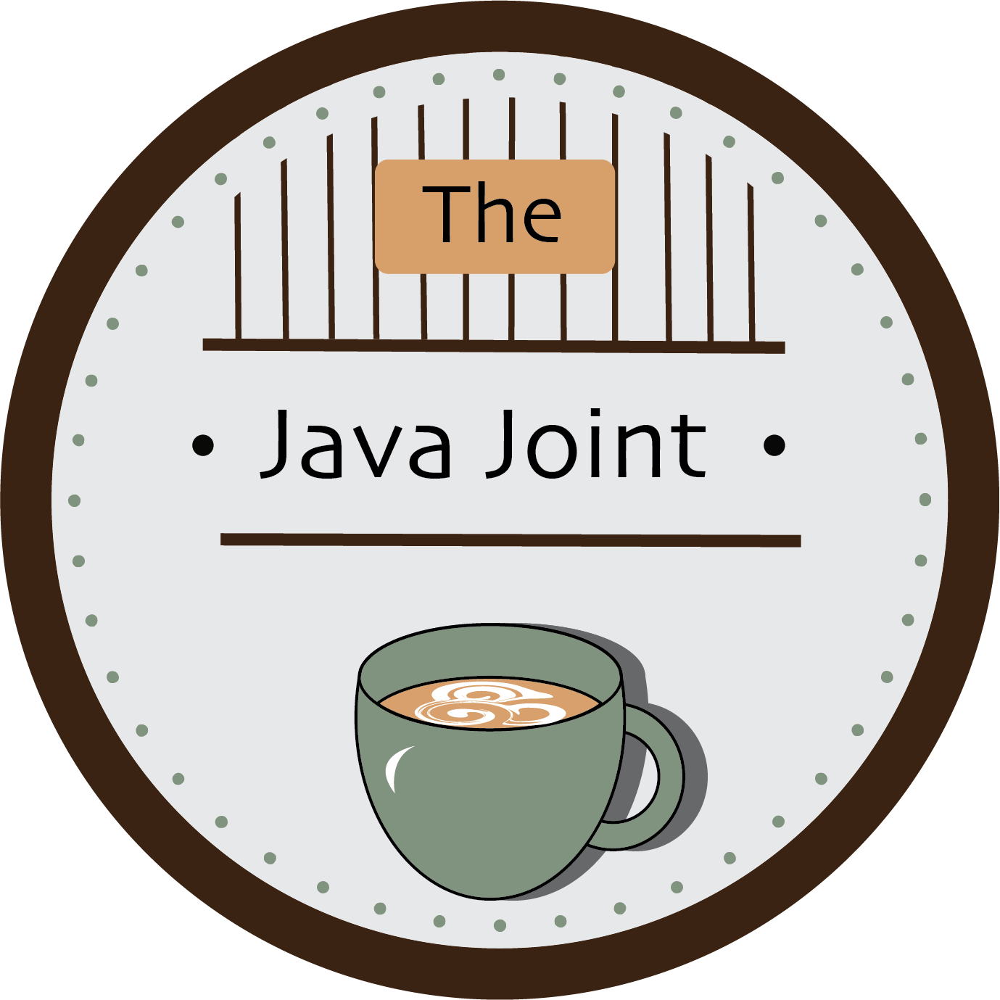

This logo was designed for my final project for my Interactive Design course during my junior year. I was designing a website for a coffee shop and wanted to create the logo for it as well. I used Illustrator to design this coffee mug with latte art.

This logo was also for the same final website project. I wanted to create various options to see which style I preferred for my website. I used Illustrator to design this as well and focused on layering circles.
